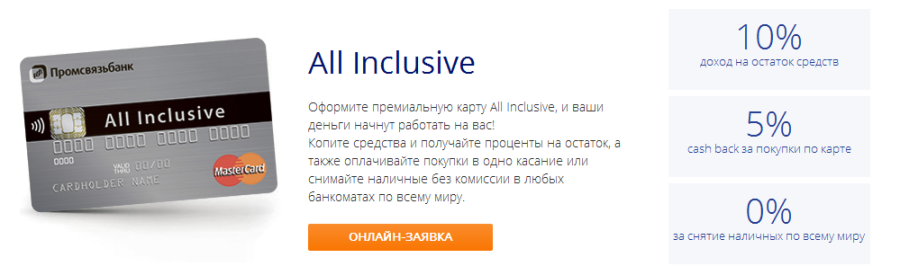

Бумажным деньгам я многие годы предпочитаю пластиковые карты. Деньги на этих картах «целее будут», их трогают в основном только мои грязные руки, к тому же пластиковые карты это ступенька к полноценному управлению деньгами — секрету, доступному моложавым глянцевым молодым людям на обложках рекламных буклетов.
По историческим причинам долгие годы я пользовался Альфа-банком. Я до сих пор считаю, что это лучший интернет-банк, у меня постоянно там присутствовало несколько так называемых Целей, которых, правда, я редко достигал. Но и интернет-банк и приложение сделаны на пятёрку, исключая, разве что косяк с подключением приложения RunKeeper. Предполагалось, что катаясь на велосипеде, я буду «откладывать» деньги на специальный счёт, с повышенной процентной ставкой, но связать приложение с банком так и не вышло.
О программе совместной программе кэшбэка Альфы и М-Видео я знал, но там, начисляется 2% от покупок, которые можно тратить в М-Видео. Мне в М-Видео ничего не надо, поэтому я просто заказывал карту с фоткой моего сына.
О предложении Промсвязьбанка с дурацким названием ALL INCLUSIVE я узнал как-то случайно, в машине по радио.

Суть предложения такая. Дебетовая карта ALL INCLUSIVE. При получении этой карты ты можешь выбрать одну статью расходов, по которой тебе будет осуществляться кэшбэк. Это могут быть Супермаркеты и Рестораны, Одежда и Обувь, АЗС и другие.
Один раз в месяц за расходы, отнесённые банком на эти статьи, вам вернётся 5%.
Нужно понимать, что именно банк относит расходы на статьи. В этой ситуации есть и плюсы и минусы. Банку по сути без разницы, что именно ты покупаешь, в общем-то у него даже нет особо возможности отследить это. Поэтому банк оперирует не товарами, а магазинами. «Лента» — продуктовый магазин — что бы ты там ни купил, хоть колёса для своей ласточки, будет отнесено банком на статью «Супермаркеты и Рестораны», а вот Metro С&С продуктовым магазином не является. Поэтому я теперь туда и не езжу. Или, к примеру, я обедаю в кафе в бане «Бодрость», но банк не считает, что это кафе — никакого кэшбэка. Разумеется, никакого кэшбэка не будет у того, кто привык к рынкам и ларькам.
Кроме этого есть ограничения. Ты можешь хоть лопнуть от еды, но максимум, который возместит тебе банк — 1500 рублей. «Лопнуть от еды» — потому что именно статью «Супермаркеты и Рестораны» я выбрал в первую очередь. К слову, 1500 рублей это 5% от 30000. Больше 30 тысяч среднестатистической семье потратить на еду за месяц всё-таки сложновато, поэтому лимит вполне разумен. К тому же банк страхуется от тех, кто планирует вымутить денег, прогнав карту в своём магазине. За эти деньги лучше уж найти нормальную работу.
Есть и дополнительные бонусы. Бесплатное снятие наличных в любых банкоматах мира. Лимит снятия — 30000 рублей в месяц, минимальная сумма для бесплатного снятия — 3000 рублей.
Кроме этого, если тебе удастся сохранять на карте больше 50 000 рублей в течение месяца, на минимальный остаток по счёту будут начислять проценты — 5% годовых, а начиная с третьего месяца — целых 10%. Это нормальный процент по хорошему депозиту, в настоящее время.
Обслуживание карты стоит 150 рублей в месяц или 1500 рублей в год. Причём и тут есть нюанс, если ты оборачиваешь по карте больше 30000 рублей в месяц или сохраняешь больше 50000 рублей, то на следующий месяц обслуживание для тебя будет бесплатным.
Согласно федеральной программе оптимизации расходов и повышения доходов, я заказал целых две карты ALL INCLUSIVE. Первую — для продуктов, вторую — для АЗС. Калькулятор подсказывает, что выгодной карта становится, если по статье вы расходуете больше 3000 рублей в месяц (кэшбэк компенсирует расходы по её содержанию). На бензин у меня уходит около 8000 рублей в месяц. Буду в плюсе.
Вторую карту я получил только в конце сентября и там ситуация нехарактерная, а вот за операции по первой карте получил 1 октября кэшбэк в размере 1145,88 рублей. Таким образом в Супермаркетах и Ресторанах в сентябре я потратил примерно 23 000 рублей. Если программу не свернут, то в год при таком темпе «набежит» почти 14000 рублей бонусом. Если заработать и положить на карту 50000 рублей, то ситуация ещё сильнее улучшается.
Финансовая программа такова — с «топливной» карты оплачиваю только бензин, с «продуктовой» — всё остальное, давая заработать банку.
Нельзя обойти стороной и неудобства, особенно заметные клиентам Альфы или Сбера. Дело в том, что во всём Кемерове у банка всего 3 банкомата, в которых можно внести наличные на карту. Причём деньги из банкомата могут до карты доходить не сразу. У меня уже был случай, когда деньги «гуляли» пару часов, — вполне штатная ситуация, по словам сотрудником банка. Лучше вносить деньги через кассу в одном из отделений, на Красной или на ФПК. Также, на карте нельзя сменить пин на твой любимый, даже в банкомате.
Карту можно заказать прямо сейчас, на сайте немного непонятно, какую форму заявки выбрать, поэтому я приготовил для тебя ссылку.
Карта приходит в Кемерово в течение 3-4 рабочих дней.
Да, совсем забыл, карта современная, с технологией PayPass. То есть покупки до 1000 рублей вы можете оплачивать без пинов и автографов, просто прикоснувшись картой к терминалу. Это уже работает в «Ленте».